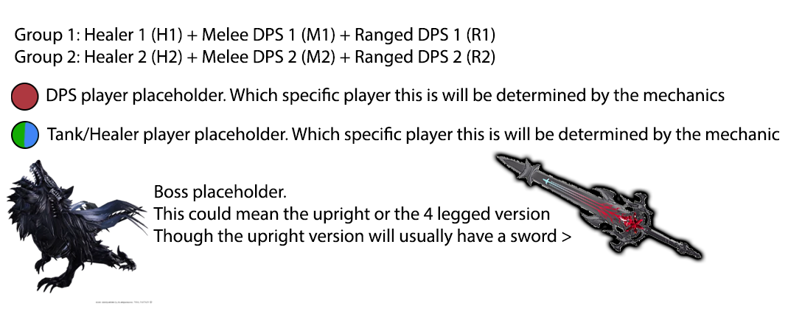
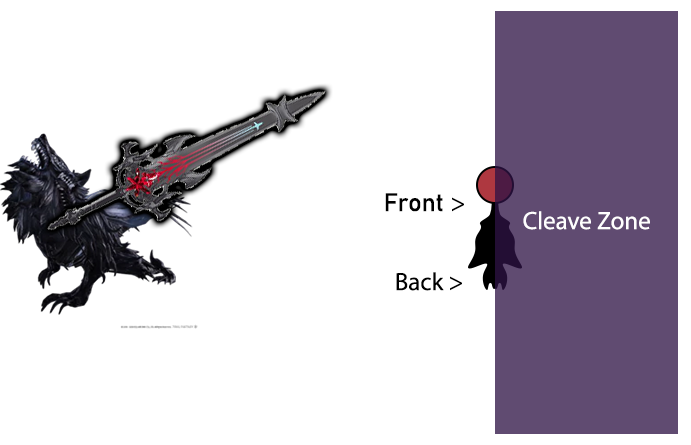
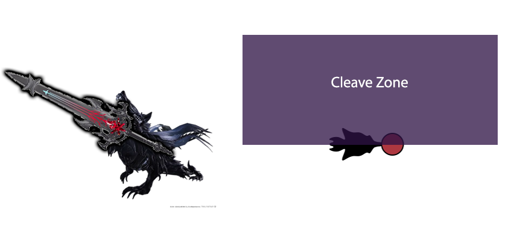
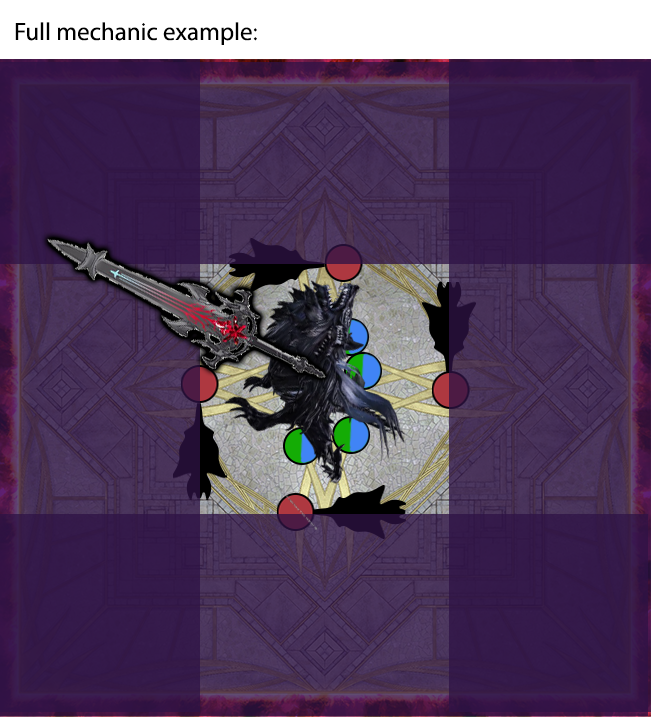
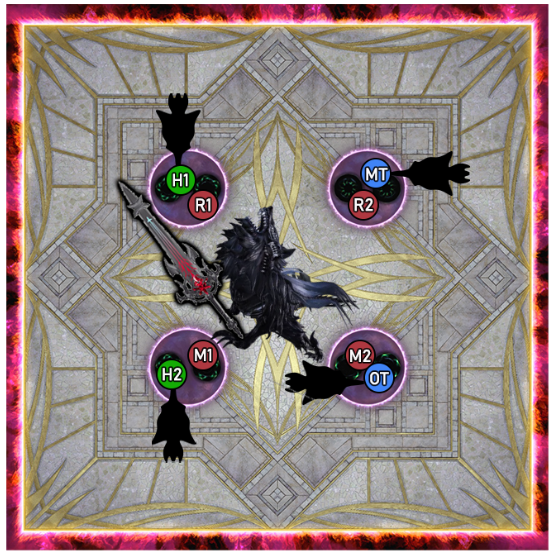
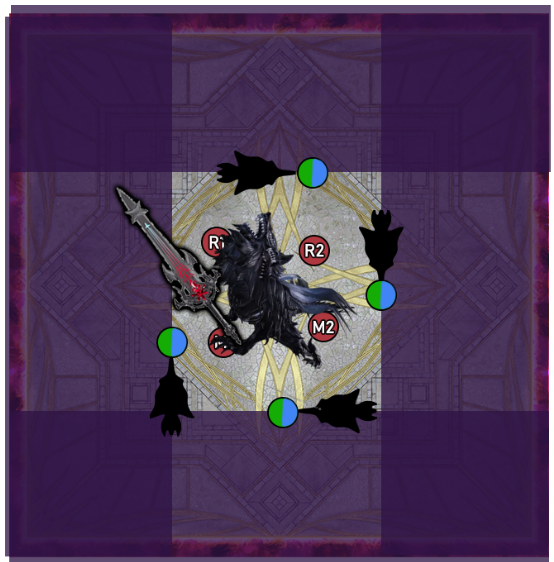

Index
I'll do this later
Terms and tokens
To make this guide a little easier, the image below will have the explanation of some terms and placeholders that I will be using in schematics Shadow Servant
At certain points throughout the fight the Shadowkeeper will grab your shadow, this is indicated by the text "The shadowkeeper takes control of your shadow" appearing on screen and a weird shadow coming from your feet (see right). We will call this the shadow servant.
Neat! How does this work?
When the mechanic resolves, Shadowkeeper will spawn a clone of herself on your shadow. This clone will hold its sword in the same hand as the real Shadowkeeper, but she will be rotated depending on your shadow servant's orientation.
When the clone spawns, it will cleave all of the arena on the side it's holding its sword.
So how do I not cleave or kill everyone?
First you have to determine the clone's orientation and which side it will cleave. The pointy side at your feet will be its front, so that will be the way the clone is facing, and the side it will cleave will be the same side the real shadowkeeper is holding its sword, but relative to the shadow servant's orientation. (examples below)
 Now that you have all this information, you and the 3 other people whose shadows got grabbed need to position yourself around the boss so your shadow servants cleave away from the boss (and everyone stacking under her to stay safe from the cleaves)
After this happens, the mechanic will repeat but with people who didn't get their shadow controlled before, while the people who just did it stack under the boss to stay safe.
Note that it is possible that some people will get a shadow servant twice, but that means that someone died right before or during the mechanic.
Voidgate (1)
Now that we know how to resolve shadow servants, we can solve this next mechanic, which adds voidgates.
Voidgates are basically just towers which require two players to be in them (Or Else).
The first set of voidgates will appear in the cardinal directions around the boss. 4 players will get a shadow servant first, this will either be all 4 DPS, or both tanks and both healers.
Both possibilities will be explained below.
DPS shadows get shadow servants first
The tanks and healers will go to their Voidgate Pair spot but do not step in the voidgate quite yet. Next the dps determine which side their shadow servant will cleave, and go to the voidgate that lets their shadow servants cleave away from the boss. (see schematic below)
When the dps step into their voidgate, the tanks and healers step in as well, you let the first set of voidgates resolve, make sure the shadow servants are locked in place, and everyone immediately runs under the boss to be safe from the cleaves.
Next comes a set of intercardinal voidgates. In this set, the dps will get ready to go in the voidgate in their assigned clock position, and the tanks and healers will get shadow servants while getting ready to go in the voidgate clockwise from their assigned clock position.
In this set of voidgates, people will need to let the voidgates resolve first, before the tanks and healers quickly adjust to their shadow servants. Once the shadows are locked in place, everyone quickly gets to safety under the boss.
Keep in mind that it is possible that the boss cleaves the other side this time.
The example below has the boss cleaving her left side, and the shadow servants in the first image below are purely for illustration purposes
 Tank/Healer shadows got grabbed first
When the tanks and healers get shadow servants first, the DPS go to the towers in their assigned voidgate pairs spot while the tanks and healers adjust based on their shadow servants and their cleaves. Let the voidgates resolve, then run in to be safe from the cleaves.
The first part of the second half of this mechanic will be the same, everyone goes in their voidgates (T/H adjust), and let the towers resolve first. Then the DPS quickly adjust to their shadow servants' cleaves. Once again, when the shadows are locked in place, everyone quickly goes under the boss to be safe from the cleaves.
The important thing to remember for this mechanic is this: for the first set of voidgates, solve the shadow servant mechanic first before getting in the voidgate, for the second set of voidgates you have to let the voidgates resolve first before doing the shadow servant mechanic.